驻车辅助/监视系统 全景监视系统 控制 全景监视控制
主要零部件的功能
| 零部件 | 功能 |
|---|---|
|
*1：汽油车型 *2：HV 车型 |
|
| 前电视摄像机总成 | 将车辆前方区域的视频信号输出至驻车辅助 ECU。 |
| 后电视摄像机总成 | 将车辆后方区域的视频信号输出至驻车辅助 ECU。 |
| 左侧侧电视摄像机总成 | 将车辆左侧区域的视频信号输出至驻车辅助 ECU。 |
| 右侧侧电视摄像机总成 | 将车辆右侧区域的视频信号输出至驻车辅助 ECU。 |
| 驻车辅助 ECU | ·
组合来自前、后、左、右侧电视摄像机总成的视频信号，以形成完整俯视图。 ·
根据来自各 ECU 和传感器的信息信号计算各引导线，将引导线与全景视野和来自各电视摄像机总成的图像组合，并将视频信号输出至收音机和显示屏接收器总成。 ·
根据输入的换档杆位置信号和全景监视器开关信号，打开和关闭各电视摄像机总成。 ·
根据来自间隙警告 ECU 总成或左侧/右侧盲区监视传感器的信号，将检测信息与当前显示的全景监视系统画面组合，并将视频信号输出至收音机和显示屏接收器总成。 |
| 收音机和显示屏接收器总成 | ·
显示从驻车辅助 ECU 接收的图像信息。 ·
将屏幕按钮操作信号发送至驻车辅助 ECU。 |
| 全景监视器开关 | 切换全景监视系统画面显示。 |
| 转向传感器 | 检测方向盘的角度并将结果信号发送至驻车辅助 ECU。 |
| 驻车档/空档位置开关总成*1 | 将换档杆位置信号发送至 ECM。 |
| 换挡杆位置传感器*2 | 将换档杆位置信号发送至混合动力车辆控制 ECU 总成。 |
| ECM*1 | 将接收的换档杆位置信号发送至驻车辅助 ECU。 |
| 混合动力车辆控制 ECU*2 | |
| 制动执行器总成*1
·
防滑控制 ECU |
将接收的车速信号发送至驻车辅助 ECU。 |
| 带主缸的制动助力器总成*2
·
防滑控制 ECU |
|
| 主车身 ECU（多路网络车身 ECU） | 将前门和行李箱门打开和关闭等信号发送至驻车辅助 ECU。 |
| 间隙警告 ECU 总成 | 将侦测声纳信息信号发送至驻车辅助 ECU。 |
| 右侧/左侧盲区监视传感器 | 将 RCTA 信息信号发送至驻车辅助 ECU。 |
系统控制
全景监视系统的各画面根据所选的画面显示模式同时显示引导线、估算的行驶路径等，以通知驾驶员无法直接从驾驶员座椅看到的轮胎位置和轨迹。
丰田驻车辅助传感器系统检测到障碍物或盲区监视系统检测到从车辆后方右侧或左侧驶入的车辆时，根据各画面显示模式侦测声纳信息或 RCTA 信息叠加在画面上。
工作条件
全景监视系统的显示方式有手动显示模式和自动显示模式。
手动显示模式
手动显示模式为根据驾驶员的需要，通过操作全景监视器开关操作显示全景监视系统画面的方式。
根据换档杆位置的不同，按下全景监视器开关时显示的画面也不同。
车速高于 20 km/h (12 mph) 时，全景监视系统画面结束并切换至显示导航画面或信息画面。
自动显示模式
在自动显示模式下起步和停车时，可自动显示“全景视野和前宽视野”或“侧视野”，而无需按下全景监视器开关。有关画面显示条件，请参考下列图表。
可通过画面上显示的 AUTO 模式按钮设定自动显示模式。
| 显示 | 画面显示条件 | 假设情况 |
|---|---|---|
| 起步时显示 | 车速为 10 km/h (6 mph) 或更低且换档杆未置于 P 或 R | 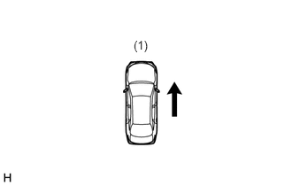
1.573,0.448 1.885,0.667
0.313,0.219
10
false
(1)
|
| (1) 检查周围环境 | ||
| 停车时显示 | 换档杆未置于 P 或 R 且车速为 10 km/h (6 mph) 或更低 | 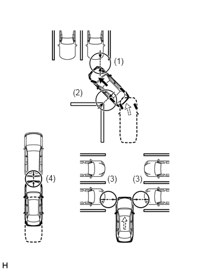
1.969,0.969 2.198,1.198
0.229,0.229
10
false
(1)
1.26,1.51 1.49,1.74
0.229,0.229
10
false
(2)
0.792,2.99 1.021,3.219
0.229,0.229
10
false
(4)
1.854,3 2.083,3.229
0.229,0.229
10
false
(3)
2.292,3 2.521,3.229
0.229,0.229
10
false
(3)
|
| (1) 前进盲区
(2) 内部盲区 (3) 车辆宽度 (4) 车距 |
以 10 km/h 或更低车速低速行驶时，丰田驻车辅助传感器系统检测到障碍物，监视画面自动从当前画面幕（导航画面，DVD 画面等）切换到带“全景视野和前宽视野”画面的间隙信息画面。
满足以下所有条件时，将显示全景视野和前宽视野。
换档杆置于 D 或 N。
丰田驻车辅助传感器系统检测到障碍物。
满足以下任一条件时，全景视野和前宽视野将取消并返回其初始画面。
车速为 0 km/h (0 mph)。
丰田驻车辅助传感器系统未检测到障碍物。
功能
全景监视系统显示范围
全景视野
全景视野图像的显示范围如下所示。然而，根据车辆和路面状况的不同，该范围也有所不同。
- 小心：
-
全景视野图像显示范围有限，可能不显示盲区内靠近车辆的物体或高于路面的物体。此外，4 个拐角处的清晰度可能会降低。小心驾驶。
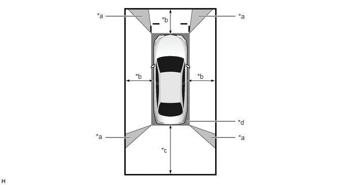
| *a | 图像组合处理区域 | *b | 约 2.0 m (6.6 ft.) |
| *c | 约 3.0 m (9.8 ft.) | *d | 盲区 |
前宽视野
如图所示，前宽视野图像显示车辆后方区域。然而，根据车辆和路面状况的不同，该范围也有所不同。
- 提示：
-
由于前电视摄像机总成的镜头可能影响图像特定区域中距物体的感测距离，因此采用了遮蔽。
- 小心：
-
图像显示范围有限。此外，由于可能不显示保险杠两端附近的物体和直接位于保险杠下方及其附近的物体，应小心驾驶。
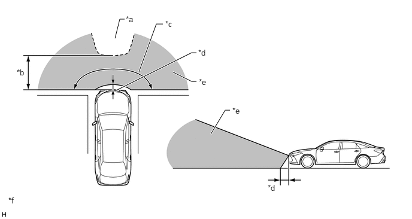
| *a | 遮蔽区域 | *b | 约 5.0 m (16.4 ft.) |
| *c | 约 180° | *d | 约 0.4 m (1.3 ft.) |
| *e | 前电视摄像机总成拍摄区域 | *f | 所示插图仅为示例。 |
后视野/后宽视野
如图所示，后视野图像显示车辆后方区域。然而，根据车辆和路面状况的不同，该范围也有所不同。
- 小心：
-
图像显示范围有限。此外，由于可能不显示保险杠两端附近的物体和直接位于保险杠下方及其附近的物体，应小心驾驶。
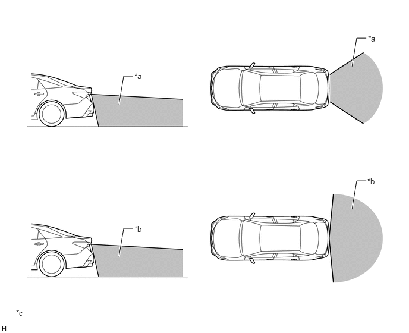
| *a | 后电视摄像机总成拍摄区域（后视野） | *b | 后电视摄像机总成拍摄区域（后宽视野） |
| *c | 所示插图仅为示例。 | - | - |
侧视野
如图所示，侧视野显示车辆侧方区域。然而，根据车辆和路面状况的不同，该范围也有所不同。
- 小心：
-
图像显示范围受限，请谨慎驾驶。
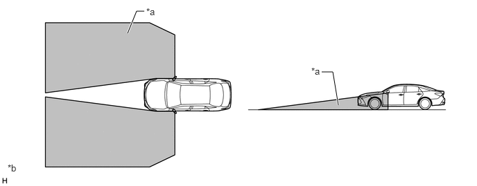
| *a | 侧电视摄像机总成拍摄区域 | *b | 所示插图仅为示例。 |
侧视图
如图所示，侧视野显示车辆侧方区域。然而，根据车辆和路面状况的不同，该范围也有所不同。
- 小心：
-
图像显示范围受限，请谨慎驾驶。
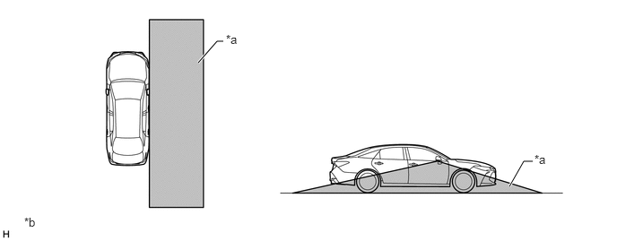
| *a | 侧电视摄像机总成拍摄区域 | *b | 所示插图仅为示例。 |
全景监视系统画面和工作原理
全景监视系统的各画面根据所选的画面显示模式显示引导线、估算的行驶路径等，以通知驾驶员无法直接从驾驶员座椅看到的轮胎位置和轨迹。
丰田驻车辅助传感器系统检测到障碍物或盲区监视系统检测到从车辆后方右侧或左侧驶入的车辆时，根据所选画面显示模式侦测声纳信息或 RCTA 信息叠加在画面上。
全景视野和前宽视野
全景视野和前宽视野显示内容
同步显示通过组合来自各电视摄像机总成的图像而形成的全景视图及来自前电视摄像机总成的图像。这些图像有助于驾驶员在可视性较差的地方（如十字路口和丁字路口）确认车辆周围及车辆左右两侧区域的安全性。
- 提示：
-
车外后视镜总成伸缩时，显示侧视野和前宽视野。
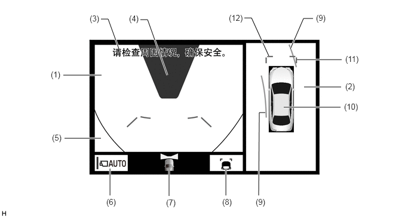
所示插图仅为示例。插图可能与实际车辆画面有所不同。
| 项目 | 描述 | |
|---|---|---|
|
*：引导线显示设定为“估算行驶路径显示模式”且转向角未置于正前方时显示。 |
||
| (1) | 前宽视野 | 车辆前方区域的前电视摄像机总成捕获的图像。 |
| (2) | 全景视野 | 通过组合来自车辆前、后、左、右侧电视摄像机总成的图像而形成的车辆俯视图。 |
| (3) | 警告信息 | 根据显示屏上的信息警告驾驶员。 |
| (4) | 遮蔽 | 由于前电视摄像机总成的镜头可能影响图像特定区域中距物体的感测距离，因此采用了遮蔽。 |
| (5) | 车辆影像 | 显示部分车辆（格栅和保险杠）。 |
| (6) | 自动模式按钮 | 用于打开和关闭自动显示模式。自动显示模式打开时，开关指示灯点亮。 |
| (7) | 摄像机方向显示车辆图标 | 指示前宽视野显示在画面左侧。 |
| (8) | 显示模式开关按钮 | 切换显示模式。 |
| (9) | 前方估算行驶路径*（黄色） | ·
显示根据转向角计算的估算行驶路径。 ·
显示转向方向外侧车辆前部的前方估算行驶路径及转向方向内侧车辆后部的前方估算行驶路径。 |
| (10) | 全景视野车辆图标 | 显示全景视野中的车辆位置。 |
| (11) | 前车辆宽度延伸线（蓝色） | 这些线为车辆宽度延伸线。显示的线宽于实际的车辆宽度。 |
| (12) | 前方距离引导线（蓝色） | 这些线为显示前保险杠边缘前方距离的距离引导线。（约 1.0 m (3.3 ft.)） |
估算行驶路径显示模式
前方估算行驶路径表示车辆的估算行驶路径。通过转动方向盘以使估算行驶路径内没有物体，驾驶员可以轻松操作车辆周围物体。
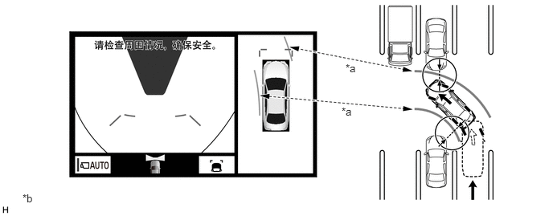
| *a | 前方估算行驶路径 | *b | 所示插图仅为示例。插图可能与实际车辆画面有所不同。 |
距离引导线显示模式
前方距离引导线告知驾驶员行驶至驻车空间时车辆相对位置。通过将前方距离引导线与驻车空间和停车位边线的端部对齐，驾驶员可以容易将车辆定位在驻车空间内。
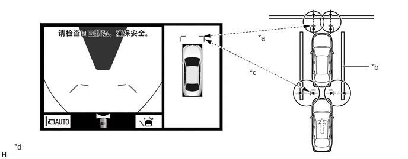
| *a | 前方距离引导线 | *b | 停车位边线 |
| *c | 前车辆宽度延伸线 | *d | 所示插图仅为示例。插图可能与实际车辆画面有所不同。 |
侧视野和前宽视野（车外后视镜总成收缩时）
侧视野和前宽视野显示内容
车外后视镜总成收缩时，不显示全景视野。相反，显示来自右侧侧电视摄像机和前宽视野的放大图像，以辅助驾驶员确认周围的安全性及在另一物体附近驻车。
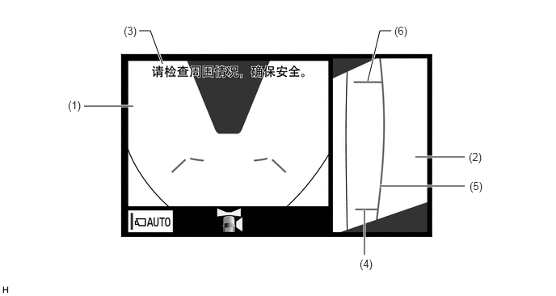
所示插图仅为示例。插图可能与实际车辆画面有所不同。
| 项目 | 描述 | |
|---|---|---|
| (1) | 前宽视野 | 车辆前方区域的前电视摄像机总成捕获的图像。 |
| (2) | 侧视野（右侧） | 右侧侧电视摄像机总成捕获的车辆右侧区域的图像。 |
| (3) | 警告信息 | 根据显示屏上的信息警告驾驶员。 |
| (4) | 后轮胎触地线（蓝色） | 显示右后轮胎触地位置的引导线。 |
| (5) | 车辆宽度平行线（蓝色） | 包括车外后视镜总成的车辆宽度引导线。 |
| (6) | 前轮胎触地线（蓝色） | 显示右前轮胎触地位置的引导线。 |
全景视野和后视野
全景视野和后视野显示内容
同步显示通过组合来自前、后、左、右侧电视摄像机总成的图像而形成的全景视野及来自后电视摄像机总成的图像。这些图像辅助驾驶员在倒车时确认周围环境的安全性。
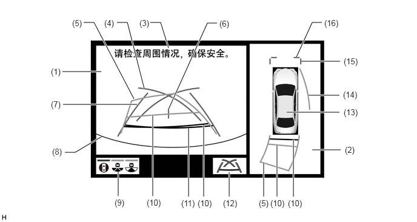
所示插图仅为示例。插图可能与实际车辆画面有所不同。
| 项目 | 描述 | |
|---|---|---|
|
*1：无法同时显示侧方估算行驶路径或后方估算行驶路径和驻车辅助引导线。 *2：引导线显示设定为“估算行驶路径显示模式”时显示。 *3：转向角约位于正前方时不显示。 *4：引导线显示设定为“估算行驶路径显示模式”且转向角未置于正前方时显示。 *5：在“驻车辅助引导线显示模式”和“距离引导线显示模式”下变为红色。 |
||
| (1) | 后视图 | 车辆后方区域的后电视摄像机总成捕获的图像。 |
| (2) | 全景视野 | 通过组合来自车辆前、后、左、右侧电视摄像机总成的图像而形成的车辆俯视图。 |
| (3) | 警告信息 | 根据显示屏上的信息警告驾驶员。 |
| (4) | 驻车辅助引导线*1（蓝色） | 指示驾驶员打满方向盘时车辆将行驶的路径。 |
| (5) | 后方估算行驶路径*2（黄色） | 与方向盘同步移动以指示车辆的估算倒车路径。 |
| (6) | 车辆中央引导线（蓝色） | 指示地面上车辆中央的估算位置。 |
| (7) | 后车辆宽度延伸线*3（蓝色） | 指示估算的车辆宽度。 |
| (8) | 后保险杠边缘 | 后保险杠边缘显示在画面上。 |
| (9) | 摄像机角度模式开关按钮 | 切换至后宽视野。 |
| (10) | 后方距离引导线（黄色/红色）*4 | 这些线为显示距后保险杠边缘距离的距离引导线。（约 1.0 m (3.3 ft.)：黄色，约 0.5 m (1.6 ft.)：红色） |
| (11) | 后方距离引导线（蓝色*5） | 这些线为显示距后保险杠边缘距离的距离引导线。（约 0.5 m (1.6 ft.)） |
| (12) | 显示模式开关按钮 | 切换显示模式。 |
| (13) | 全景视野车辆图标 | 显示全景视野中的车辆位置。 |
| (14) | 侧方估算行驶路径*4（黄色） | ·
显示根据转向角计算的估算行驶路径。 ·
显示转向方向外侧的估算行驶路径。 |
| (15) | 前车辆宽度延伸线（蓝色） | 这些线为车辆宽度延伸线。显示的线宽于实际的车辆宽度。 |
| (16) | 前方距离引导线（蓝色） | 这些线为显示前保险杠边缘前方距离的距离引导线。（约 1.0 m (3.3 ft.)） |
估算行驶路径显示模式（垂列式驻车（进入停车位））
估算行驶路径基于当前的转向角告知驾驶员车辆的估算行驶路径。倒车时，驾驶员通过转动方向盘使估算行驶路径定位在相应的停车位边线，从而轻松将车辆停放在停车位内。此外，估算行驶路径辅助驾驶员避开障碍物。
后方车辆宽度延伸线可用于通过确认停车位边线与后方车辆宽度延伸线是交叉还是平行来判定车辆是否直线停驻在停车位上。
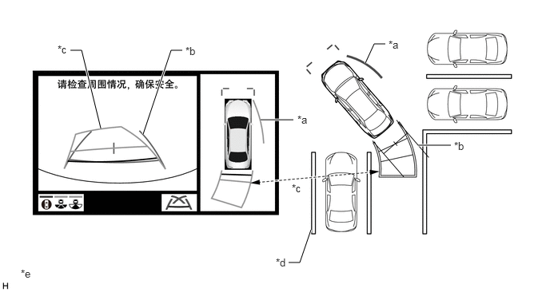
| *a | 侧方估算行驶路径 | *b | 后方车辆宽度延伸线 |
| *c | 后方估算行驶路径 | *d | 停车位边线 |
| *e | 所示插图仅为示例。插图可能与实际车辆画面有所不同。 | - | - |
估算行驶路径显示模式（纵列式驻车）
估算行驶路径基于当前的转向角告知驾驶员车辆的估算行驶路径。驾驶员通过转动方向盘使估算行驶路径定位在相应的道路侧或停车位边线，从而轻松将车辆停放在停车位内。此外，估算行驶路径辅助驾驶员避开障碍物。
后方车辆宽度延伸线可用于通过确认路肩和停车位边线等以及后方车辆宽度延伸线的状况判定车辆是否直线停驻在所需的停车位置。
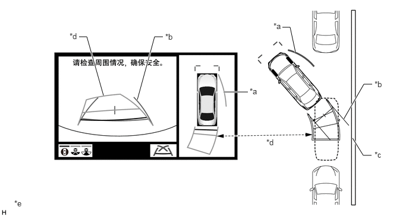
| *a | 侧方估算行驶路径 | *b | 后方车辆宽度延伸线 |
| *c | 路肩和停车位边线等 | *d | 后方估算行驶路径 |
| *e | 所示插图仅为示例。插图可能与实际车辆画面有所不同。 | - | - |
驻车辅助引导线显示模式（垂列式驻车（进入停车位））
驻车辅助引导线将倒车时打满方向盘时的车辆行驶路径告知驾驶员。通过在倒车时对齐驻车辅助引导线和停车位边线，可将车辆引导至驾驶员应开始打转方向盘的位置。
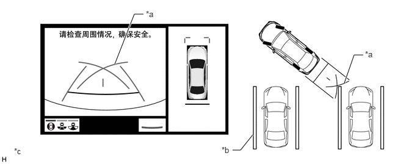
| *a | 驻车辅助引导线 | *b | 停车位边线 |
| *c | 所示插图仅为示例。插图可能与实际车辆画面有所不同。 | - | - |
驻车辅助引导线显示模式（纵列式驻车）
驻车辅助引导线将倒车时打满方向盘时的车辆行驶路径告知驾驶员。通过在倒车时对齐驻车辅助引导线和道路侧或停车位边线，可将车辆引导至驾驶员应开始打转方向盘的位置。
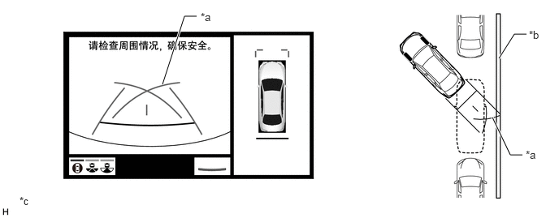
| *a | 驻车辅助引导线 | *b | 路肩和停车位边线等 |
| *c | 所示插图仅为示例。插图可能与实际车辆画面有所不同。 | - | - |
侧视野和后视野（车外后视镜总成收缩时）
侧视野和后视野显示内容
车外后视镜总成收缩时，右侧侧电视摄像机总成和后电视摄像机总成图像同时显示，帮助驾驶员确认周围的安全性及靠近路缘或停车位边界线驻车。
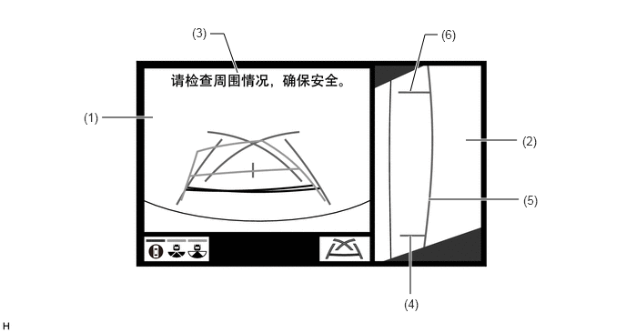
所示插图仅为示例。插图可能与实际车辆画面有所不同。
| 项目 | 描述 | |
|---|---|---|
| (1) | 后视图 | 车辆后方区域的后电视摄像机总成捕获的图像。 |
| (2) | 侧视野（右侧） | 右侧侧电视摄像机总成捕获的车辆右侧区域的图像。 |
| (3) | 警告信息 | 根据显示屏上的信息警告驾驶员。 |
| (4) | 后轮胎触地线（蓝色） | 显示右后轮胎触地位置的引导线。 |
| (5) | 车辆宽度平行线（蓝色） | 包括车外后视镜总成的车辆宽度引导线。 |
| (6) | 前轮胎触地线（蓝色） | 显示右前轮胎触地位置的引导线。 |
后视图
后视野显示内容
显示后电视摄像机总成的图像，有助于在倒车时辅助驾驶员确认车辆左右两侧的安全性。
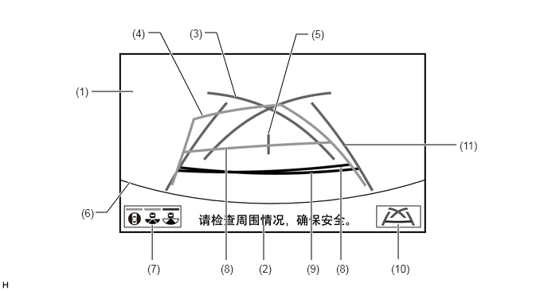
所示插图仅为示例。插图可能与实际车辆画面有所不同。
| 项目 | 描述 | |
|---|---|---|
|
*1：无法同时显示后方估算行驶路径和驻车辅助引导线。 *2：引导线显示设定为“估算行驶路径显示模式”时显示。 *3：引导线显示设定为“估算行驶路径显示模式”且转向角未置于正前方时显示。 *4：在“驻车辅助引导线显示模式”和“距离引导线显示模式”下变为红色。 *5：转向角约位于正前方时不显示。 |
||
| (1) | 后视图 | 车辆后方区域的后电视摄像机总成捕获的图像。 |
| (2) | 警告信息 | 根据显示屏上的信息警告驾驶员。 |
| (3) | 驻车辅助引导线*1（蓝色） | 指示驾驶员打满方向盘时车辆将行驶的路径。 |
| (4) | 后方估算行驶路径*2（黄色） | 与方向盘同步移动以指示车辆的估算倒车路径。 |
| (5) | 车辆中央引导线（蓝色） | 指示地面上车辆中央的估算位置。 |
| (6) | 后保险杠边缘 | 后保险杠边缘显示在画面上。 |
| (7) | 摄像机角度模式按钮 | 切换至全景视野和后视野。 |
| (8) | 后方距离引导线（黄色/红色）*3 | 这些线为显示距后保险杠边缘距离的距离引导线。（约 1.0 m (3.3 ft.)：黄色，约 0.5 m (1.6 ft.)：红色） |
| (9) | 后方距离引导线（蓝色*4） | 这些线为显示距后保险杠边缘距离的距离引导线。（约 0.5 m (1.6 ft.)） |
| (10) | 显示模式开关按钮 | 切换显示模式。 |
| (11) | 后方车辆宽度延伸线*5（蓝色） | 指示估算的车辆宽度。 |
后宽视野
后宽视野显示内容
显示后电视摄像机总成的放大图像，有助于在倒车时辅助驾驶员确认车辆左右两侧的安全性。
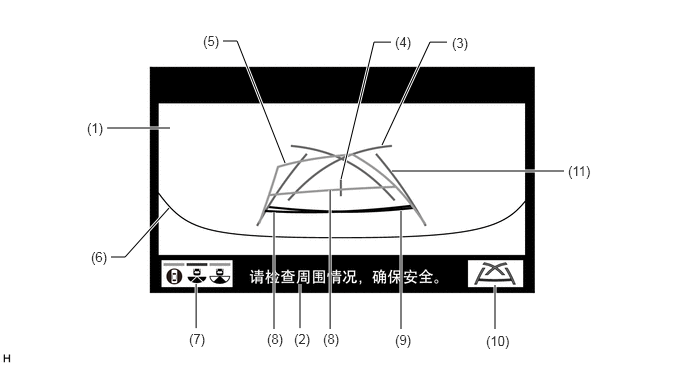
所示插图仅为示例。插图可能与实际车辆画面有所不同。
| 项目 | 描述 | |
|---|---|---|
|
*1：无法同时显示后方估算行驶路径和驻车辅助引导线。 *2：引导线显示设定为“估算行驶路径显示模式”时显示。 *3：引导线显示设定为“估算行驶路径显示模式”且转向角未置于正前方时显示。 *4：在“驻车辅助引导线显示模式”和“距离引导线显示模式”下变为红色。 *5：转向角约位于正前方时不显示。 |
||
| (1) | 后宽视野 | 车辆后方区域的后电视摄像机总成捕获的图像。 |
| (2) | 警告信息 | 根据显示屏上的信息警告驾驶员。 |
| (3) | 驻车辅助引导线*1（蓝色） | 指示驾驶员打满方向盘时车辆将行驶的路径。 |
| (4) | 车辆中央引导线（蓝色） | 指示地面上车辆中央的估算位置。 |
| (5) | 后方估算行驶路径*2（黄色） | 与方向盘同步移动以指示车辆的估算倒车路径。 |
| (6) | 后保险杠边缘 | 后保险杠边缘显示在画面上。 |
| (7) | 摄像机角度模式按钮 | 切换至后视野。 |
| (8) | 后方距离引导线（黄色/红色）*3 | 这些线为显示距后保险杠边缘距离的距离引导线。（约 1.0 m (3.3 ft.)：黄色，约 0.5 m (1.6 ft.)：红色） |
| (9) | 后方距离引导线（蓝色*4） | 这些线为显示距后保险杠边缘距离的距离引导线。（约 0.5 m (1.6 ft.)） |
| (10) | 显示模式开关按钮 | 切换显示模式。 |
| (11) | 后方车辆宽度延伸线*5（蓝色） | 指示估算的车辆宽度。 |
估算行驶路径显示模式（垂列式驻车（进入停车位））
估算行驶路径基于当前的转向角告知驾驶员车辆的估算行驶路径。倒车时，驾驶员通过转动方向盘使估算行驶路径定位在相应的停车位边线，从而轻松将车辆停放在停车位内。此外，估算行驶路径辅助驾驶员避开障碍物。
后方车辆宽度延伸线可用于通过确认停车位边线与后方车辆宽度延伸线的状态来判定车辆是否直线停驻在停车位上。
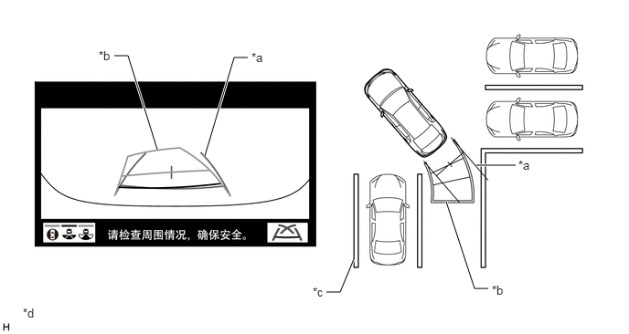
| *a | 后方车辆宽度延伸线 | *b | 后方估算行驶路径 |
| *c | 停车位边线 | *d | 所示插图仅为示例。插图可能与实际车辆画面有所不同。 |
估算行驶路径显示模式（纵列式驻车）
估算行驶路径基于当前的转向角告知驾驶员车辆的估算行驶路径。倒车时，驾驶员通过转动方向盘使估算行驶路径定位在相应的道路侧或停车位边线，从而轻松将车辆停放在停车位内。此外，估算行驶路径辅助驾驶员避开障碍物。
后方车辆宽度延伸线可用于通过确认路肩和停车位边线等以及后方车辆宽度延伸线的状况判定车辆是否直线停驻在所需的停车位置。
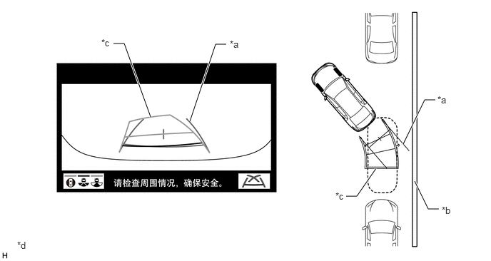
| *a | 后方车辆宽度延伸线 | *b | 路肩和停车位边线等 |
| *c | 后方估算行驶路径 | *d | 所示插图仅为示例。插图可能与实际车辆画面有所不同。 |
驻车辅助引导线显示模式（垂列式驻车（进入停车位））
驻车辅助引导线将倒车时打满方向盘时的车辆行驶路径告知驾驶员。通过在倒车时对齐驻车辅助引导线和停车位边线，可将车辆引导至驾驶员应开始打转方向盘的位置。
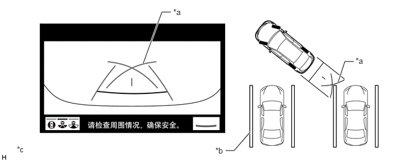
| *a | 驻车辅助引导线 | *b | 停车位边线 |
| *c | 所示插图仅为示例。插图可能与实际车辆画面有所不同。 | - | - |
驻车辅助引导线显示模式（纵列式驻车）
将驻车辅助引导线用作向导，以找到直线倒车时（如纵列式驻车时）的停车位置。通过在倒车时对齐驻车辅助引导线和道路侧或停车位边线，可将车辆引导至驾驶员应开始打转方向盘的位置。
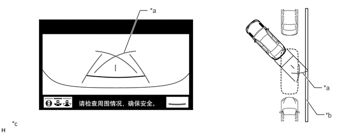
| *a | 驻车辅助引导线 | *b | 路肩和停车位边线等 |
| *c | 所示插图仅为示例。插图可能与实际车辆画面有所不同。 | - | - |
侧视野
侧视野显示内容
此视野显示来自安装在车辆侧面的侧电视摄像机总成的图像，辅助驾驶员确认车辆侧面区域的安全性并避免接触狭窄道路上的障碍物等。
即使车外后视镜总成收缩时，也显示侧视野。
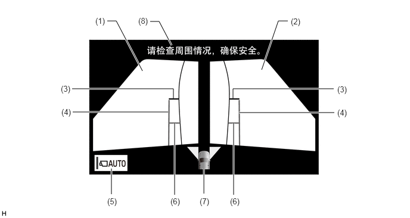
所示插图仅为示例。插图可能与实际车辆画面有所不同。
| 项目 | 描述 | |
|---|---|---|
| (1) | 侧视野（左前侧） | 车辆左前侧区域的左侧侧电视摄像机总成捕获的图像。 |
| (2) | 侧视野（右前侧） | 车辆右前侧区域的右侧侧电视摄像机总成捕获的图像。 |
| (3) | 前方距离引导线（红色） | 这些线为显示前保险杠边缘前方距离的距离引导线。（约 0.5 m (1.6 ft.)） |
| (4) | 车辆宽度平行线（蓝色） | 包括车外后视镜总成的车辆宽度引导线。 |
| (5) | 自动模式按钮 | 可用于打开和关闭自动显示模式。自动显示模式打开时，按钮内的指示灯点亮。 |
| (6) | 前轮胎触地线（蓝色） | 显示前轮胎触地位置的引导线。 |
| (7) | 摄像机方向显示车辆图标 | ·
指示显示“侧视野”。 ·
丰田驻车辅助传感器系统检测到障碍物时，障碍物距离和方向重叠显示在画面上。 |
| (8) | 警告信息 | 根据显示屏上的信息警告驾驶员。 |
车辆宽度平行线（障碍物规避和靠近狭窄道路上的物体行驶）
车辆宽度平行线告知驾驶员车辆的大致宽度（包括车外后视镜总成）。通过驾驶车辆，使车辆宽度平行线不与实际障碍物、白线、路缘等重叠，驾驶员可以避开障碍物，靠近狭窄道路上的物体行驶。
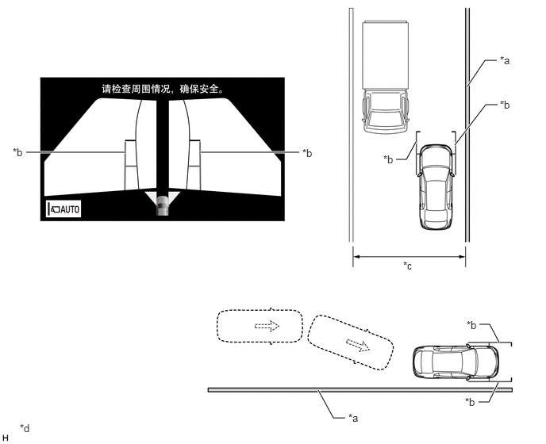
| *a | 墙壁、栅栏等 | *b | 车辆宽度平行线 |
| *c | 狭窄道路等。 | *d | 所示插图仅为示例。插图可能与实际车辆画面有所不同。 |
移动视野
移动视野（至全景视野）显示内容
该视野组合来自前、后、左、右侧电视摄像机总成的图像，以显示车辆上方对角线角度的车辆图像。显示图像围绕显示在画面上的车辆旋转 360 度，以辅助驾驶员确认周围的安全性。此外，来自车辆上方对角线角度的车辆图像旋转完整的 360 度后，显示车辆的俯视图。
使用旋转暂停按钮，移动视野旋转可任意暂停和不暂停。
满足以下所有条件时，将显示移动视野。
换档杆置于 P。
打开丰田驻车辅助传感器系统。
按下全景视野监视器开关。
车外后视镜总成收缩时，不显示移动视野，显示侧视野和前宽视野。
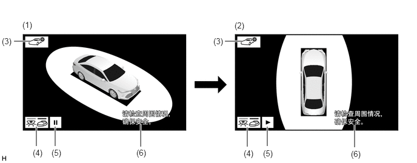
所示插图仅为示例。插图可能与实际车辆画面有所不同。
| 项目 | 描述 | |
|---|---|---|
| (1) | 移动视野 | 绕车辆旋转图像 360 度时，可从车辆上方对角线角度看到车辆及其周围的图像。 |
| (2) | 全景视野 | 通过组合来自车辆前、后、左、右侧电视摄像机总成的图像而形成的车辆俯视图。 |
| (3) | 车身颜色设置按钮 | 更改车身颜色。 |
| (4) | 透视视野按钮 | 切换至透视视野。 |
| (5) | 旋转暂停按钮 | 暂停和不暂停移动视野旋转。 |
| (6) | 警告信息 | 根据显示屏上的信息警告驾驶员。 |
透视视野
透视视野（至全景视野）显示内容
通过组合来自车辆前、后和两侧的摄像机的图像，形成车辆周围区域的模拟视频显示。通过减少车内盲区的大小，辅助驾驶员确认车辆周围区域的安全。
使用旋转暂停按钮，透视视野旋转可任意暂停和不暂停。
满足以下所有条件时，将显示透视视野。
换档杆置于 P。
打开丰田驻车辅助传感器系统。
按下全景视野监视器开关。
车外后视镜总成收缩时，不显示透视视野，显示侧视野和前宽视野。
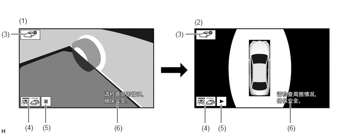
所示插图仅为示例。插图可能与实际车辆画面有所不同。
| 项目 | 描述 | |
|---|---|---|
| (1) | 透视视野 | 车辆周围区域模拟视野（从车内观察时）。 |
| (2) | 全景视野 | 通过组合来自车辆前、后、左、右侧电视摄像机总成的图像而形成的车辆俯视图。 |
| (3) | 车身颜色设置按钮 | 更改车身颜色。 |
| (4) | 移动视野按钮 | 切换至移动视野。 |
| (5) | 旋转暂停按钮 | 暂停和继续旋转透视视野。 |
| (6) | 警告信息 | 根据显示屏上的信息警告驾驶员。 |
全景监视系统显示操作
全景监视系统有 2 种显示模式。“手动显示模式”根据驾驶员需要显示画面，“自动显示模式”在满足显示条件时自动显示画面。
可通过操作全景监视器开关显示并切换全景监视系统显示。
在手动显示模式下按下全景监视器开关或满足自动显示模式显示条件时，显示全景监视画面。
电源开关置于 ON (IG) 位置且换档杆置于 R 时，显示“全景视野和后视野”，与全景监视器开关的工作状态无关。
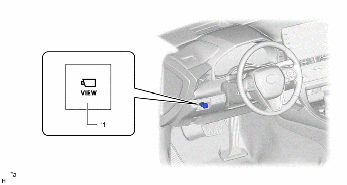
| *1 | 全景监视器开关 | - | - |
| *a | 所示插图仅为示例。 | - | - |
全景监视系统画面转换
低速行驶和驻车时，全景视野监视系统辅助驾驶员确认车辆周围状况。
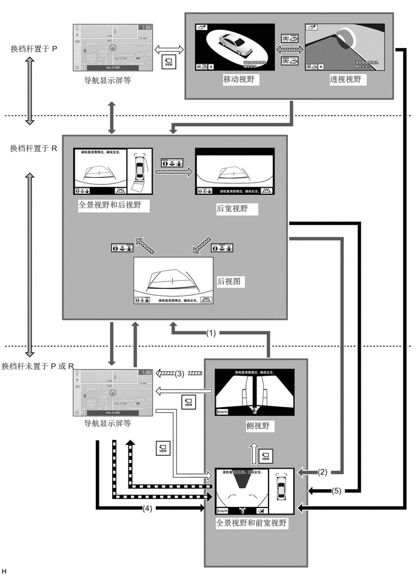
所示插图仅为示例。插图可能与实际车辆画面有所不同。
| 换档操作 | 画面根据换档操作转换（手动显示模式） | ||
| 画面根据车速变化转换 | 
|
画面根据开关操作转换（手动显示模式） | |

|
自动显示模式下的画面转换 | 画面根据优先级画面切换而转换 | |
| 丰田驻车辅助传感器联动全景视野功能进行画面转换 | - | - |
| 编号 | 条件 |
|---|---|
| (1) | 按下全景监视器开关后，显示“全景视野和前宽视野”或“侧视野”并移动换档杆时。 |
| (2) | 在以下条件 (1) 下显示“全景视野和后视野”、“后宽视野”或“全景视野和前宽视野”并移动换档杆时 |
| (3) | 车速达到约 20 km/h (12 mph) 或更高。 |
| (4) | 车速变为 10 km/h (6 mph) 或更低时（显示之前显示的“全景视野和前宽视野”或“侧视野”） |
| (5) | 显示之前显示的“全景视野和前宽视野”或“侧视野”时 |
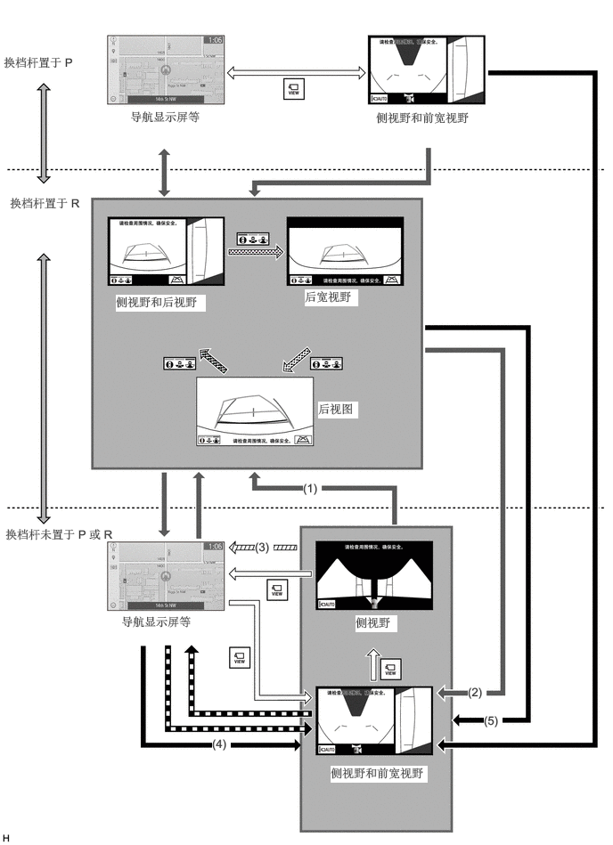
所示插图仅为示例。插图可能与实际车辆画面有所不同。
| 换档操作 | 画面根据换档操作转换（手动显示模式） | ||
| 画面根据车速变化转换 |
|
画面根据开关操作转换（手动显示模式） | |
|
|
自动显示模式下的画面转换 | 画面根据优先级画面切换而转换 | |
| 丰田驻车辅助传感器联动全景视野功能进行画面转换 | - | - |
| 编号 | 条件 |
|---|---|
| (1) | 按下全景监视器开关后，显示“侧视野和前宽视野”或“侧视野”并移动换档杆时。 |
| (2) | 在以下条件 (1) 下显示“侧视野和后视野”、“后宽视野”或“侧视野和前宽视野”并移动换档杆时 |
| (3) | 车速达到约 20 km/h (12 mph) 或更高。 |
| (4) | 车速变为 10 km/h (6 mph) 或更低时（显示之前显示的“侧视野和前宽视野”或“侧视野”） |
| (5) | 显示之前显示的“侧视野和前宽视野”或“侧视野”时 |
全景视野缩放功能
通过触摸全景视野画面，可部分放大全景视野车辆图标。
使用放大的功能，可放大车角附近的 4 个部位。
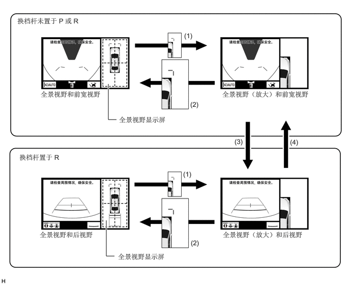
| 编号 | 条件 |
|---|---|
| (1) | 车速约为 12 km/h (7 mph) 或更低且丰田驻车辅助传感器系统打开时，触摸全景视野画面上 4 个区域的任一区域。 |
| (2) | 满足以下任一条件：
·
触摸全景视野放大画面。 ·
车速从约 12 km/h (7 mph) 或更低变为约 12 km/h (7 mph) 以上。 ·
丰田驻车辅助传感器系统关闭。 |
| (3) | 换档杆移至 R。 |
| (4) | 换档杆移至 D 或 N 位置。 |
驻车辅助警示
如果丰田驻车辅助传感器系统激活时检测到障碍物，则会显示车辆与障碍物之间的大致距离。
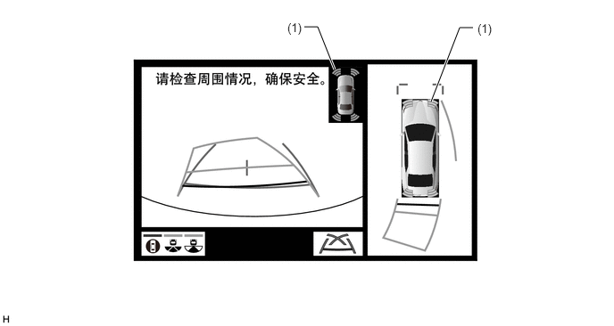
所示插图仅为示例。插图可能与实际车辆画面有所不同。
| 项目 | 描述 | |
|---|---|---|
| (1) | 侦测声纳图标 | 如果丰田驻车辅助传感器系统激活时检测到障碍物，则会显示车辆与障碍物之间的大致距离。 |
如果 RCTA 功能激活时检测到车辆，则显示接近车辆的方向。
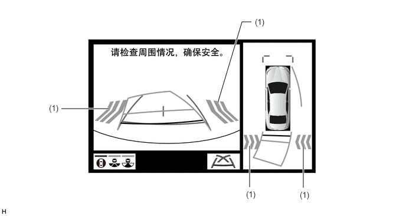
所示插图仅为示例。插图可能与实际车辆画面有所不同。
| 项目 | 描述 | |
|---|---|---|
| (1) | RCTA 图标 | 如果激活盲区监视系统时检测到车辆，则显示接近车辆的方向。 |
诊断
驻车辅助 ECU 配备可显示全景视野监视系统诊断菜单的诊断功能。有关详情，请参考修理手册。